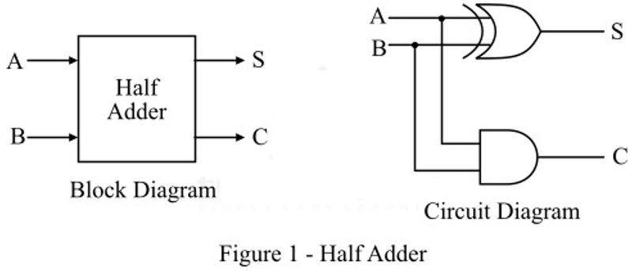
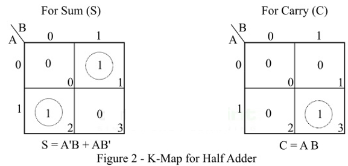
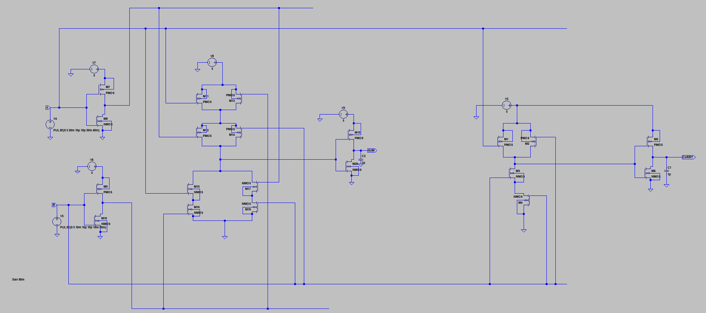
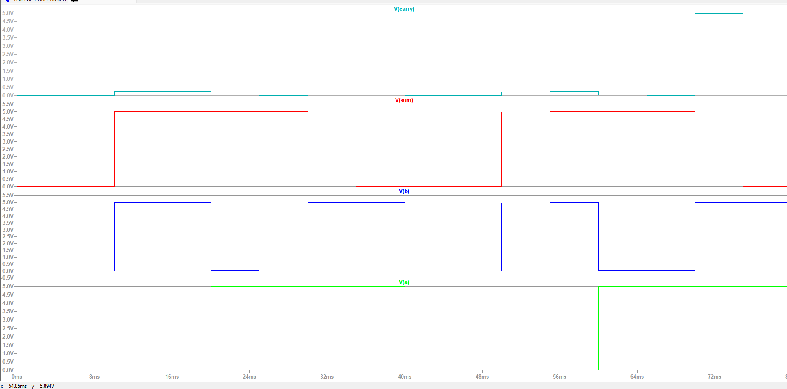

Experiment No. 07
Name: Sarthak S Walunj Batch: B3
Roll No.: 224A7069 Date: 25/08/2026
To Design and simulate half adder using static CMOS design style
OBJECTIVE: To simulate the schematic of the Half adder
SOFTWARE: LT Spice
THEORY:
A combinational logic circuit which is designed to add two binary digits is called as a half adder. The half adder provides the output along with a carry value (if any). The half adder circuit is designed by connecting an EX-OR gate and one AND gate. It has two input terminals and two output terminals for sum and carry. The block diagram and circuit diagram of a half adder are shown in Figure-1.

From the logic circuit diagram of half adder, it is clear that A and B are the two input bits, S is the output sum, and C is the output carry bit.
In the case of a half adder, the output of the EX-OR gate is the sum of two bits and the output of the AND gate is the carry. Although, the carry obtained in one addition will not be forwarded in the next addition because of this it is known as half adder.
Half adder adds two binary digits according to the rules of binary addition. These rules are as follows −
0 + 0 = 0
0 + 1 = 1
1 + 0 = 1
1 + 1 = 10 (Sum = 0 & Carry = 1)
According to these rules of binary addition, we can see that the first three operations produce a sum whose length is one digit, whereas in the case of last operation (1 and 1), the sum consists of two digits. Here, the MSB (most significant bit) of this result is called a carry (which is 1) and the LSB (least significant bit) is called the sum (which is 0).
Truth table is one that gives the relationship between inputs and outputs of a logic circuit and explains the operation of the circuit. The following is the truth table of the half-adder −
| Inputs | Outputs | ||
|---|---|---|---|
| A | B | S (Sum) | C (Carry) |
| 0 | 0 | 0 | 0 |
| 0 | 1 | 1 | 0 |
| 1 | 0 | 1 | 0 |
| 1 | 1 | 0 | 1 |
We can use the K-Map (Karnaugh Map), a method for simplifying Boolean algebra, to determine equations of the sum bit (S) and the output carry bit (C) of the half adder circuit.
The k-map for half adder circuit is shown in Figure-2.

The characteristic equations of half adder, i.e., equations of sum (S) and carry (C) are obtained according to the rules of binary addition. These equations are given below −
The sum (S) of the half-adder is the XOR of A and B. Thus,
Sum,S=A⊕B= AB′+A′B
The carry (C) of the half-adder is the AND of A and B. Therefore,
Carry,C=A⋅B Carry,C=A⋅B
The following are some important applications of half adder −
Half adder is used in ALU (Arithmetic Logic Unit) of computer processors to add binary bits.
Half adder is used to realize full adder circuit.
Half adder is used in calculators.
Half adder is used to calculate addresses and tables.
PROCEDURE:
Open LT Spice
In Files Menu---click on new schematics
Go to Components---Select each required component----do connections.
Simulate edit command: add required voltage level
Simulate the schematic --- in Tools menu ----go to Simulation(spice)--- click on Write Spice deck.
LT Spice window gets opened. There Right click on the black window---click on add trace.
OUTPUT:

Circuit-
Waveform-CONCLUSION:
In this experiment, a Half Adder circuit was successfully designed and simulated in LTSpice using complementary static CMOS logic style. By implementing the XOR gate for the Sum output (\(S = A\overline{B} + \overline{A}B\)) and the AND gate for the Carry output (\(C = A \cdot B\)), the circuit accurately realized binary addition. The transient simulation waveforms confirmed that the logical behavior matches the theoretical truth table for all four input combinations (00, 01, 10, and 11). Thus, the functionality of the static CMOS Half Adder design was verified.